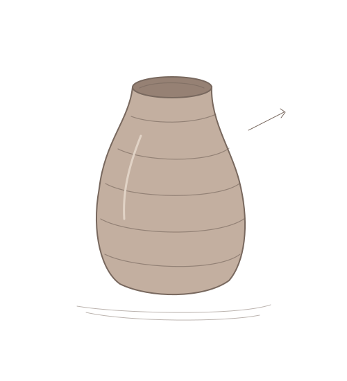

Salene’s Playground
Index
+
A place for
curious
things.
Turn it over
↗
×
A little clay.
A thousand possibilities.
Find the wheel ↓
Wander in
↓
PLAY
MAKE
WANDER
01 / MAKE
Virtual
Clay Studio
Sit at the wheel
↗

02 / OBSERVE
The
Aviary
↗
My World
↗
Love,
& other things.
An Autobiography
Told Through Love
↗
Small
diversions.
听
听不懂 ↗
8
Unhinged 8 Ball ↗
BAD
IDEA
Bad Idea Generator ↗
What
now?
What Should We Do? ↗
↝
A Little Adventure ↗
yes?
no.
Should I Text My Ex? ↗
⚑
Am I the Red Flag? ↗